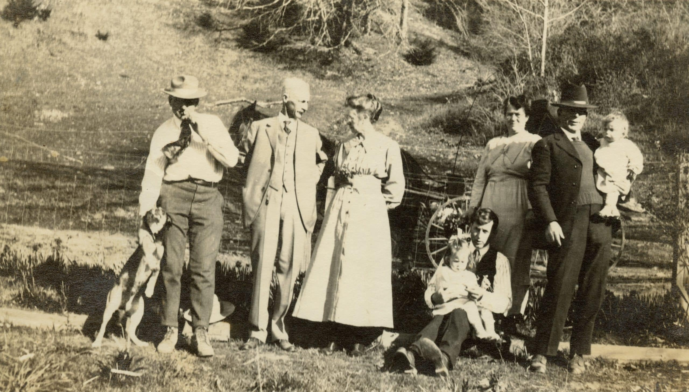
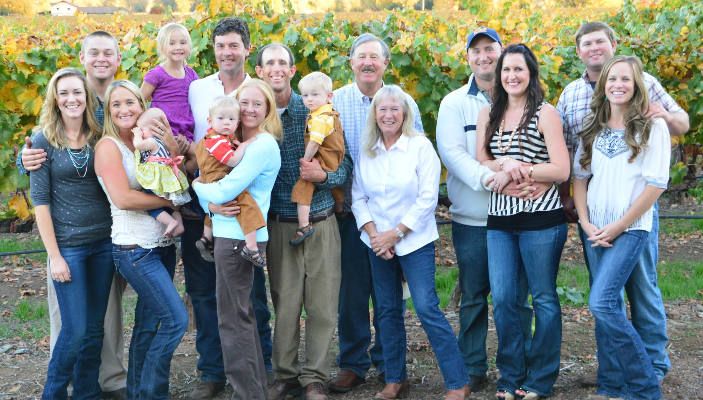

Rooted in Potter Valley
The Pauli Family owns and operates Yokayo Wine Company and has a long history in Mendocino County.
The family began farming in Potter Valley in the 1920s after moving from Willits, where they had settled in the 1850s. Early generations farmed Bartlett pears and operated a small dairy. In the 1970s, Bill Pauli planted the family's first wine grape vineyard.


Bill, his wife Janet, and their five children farm pears and vineyards in five AVAs across three counties. Their vineyards include 13 varieties, including Pinot Noir, Chardonnay, Sauvignon Blanc, and Cabernet Sauvignon. The vineyards are certified sustainable under the Fish Friendly Farming program.
Bill Pauli, founder
Bill Pauli began working in the wine industry in the 1970s. After graduating from the University of Nevada, Reno, he created a farm management company focused on wine grapes while taking over management of the family farm. In 2008, Bill, Janet, and their five grown children constructed Yokayo Wine Company.
Bill's industry experience includes leadership at Souverain Winery, Saint Genevieve Winery, and Redwood Valley Cellars. He served as President of the California Farm Bureau, chaired the California Association of Wine Grape Growers, and has served the Potter Valley Volunteer Fire Department for decades.
His recognition includes Mendocino County Agriculturist of the Year, the California Farm Bureau Federation Distinguished Service Award, and State of California Agriculturist of the Year.